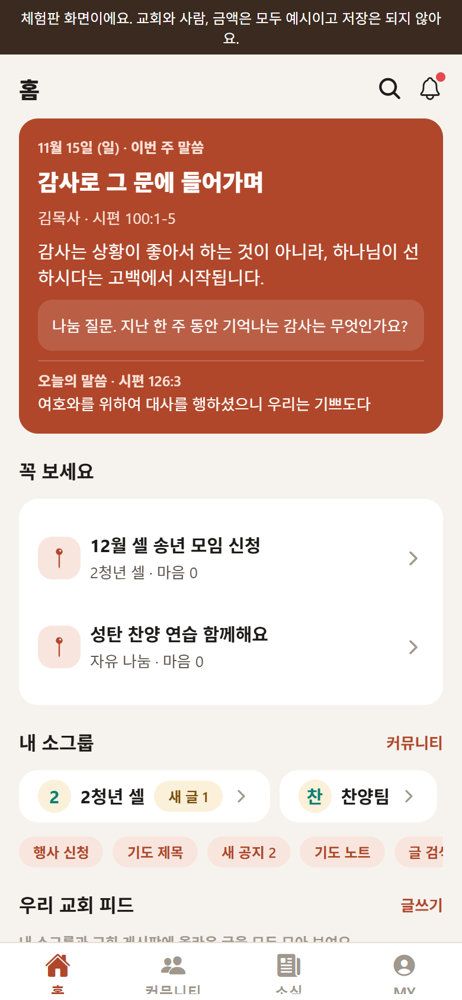
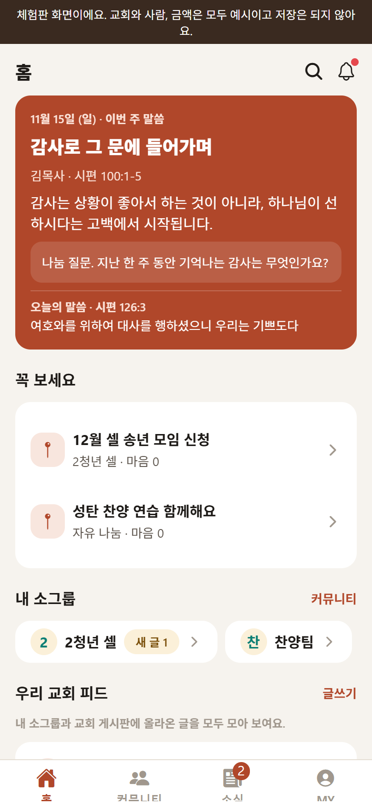
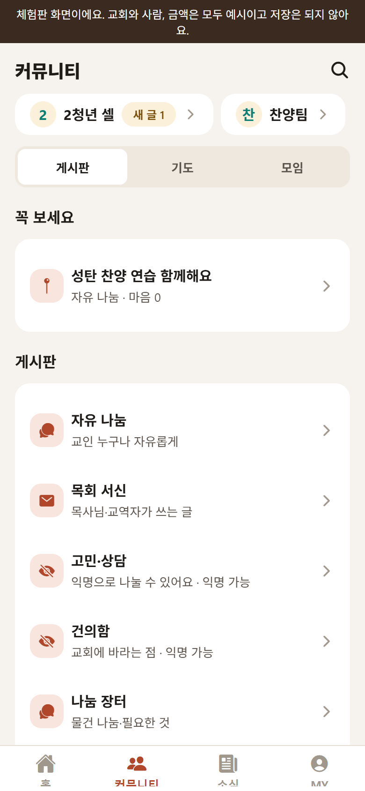
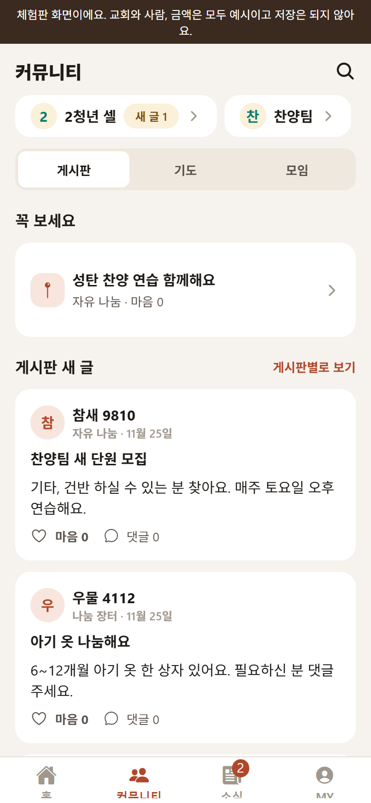
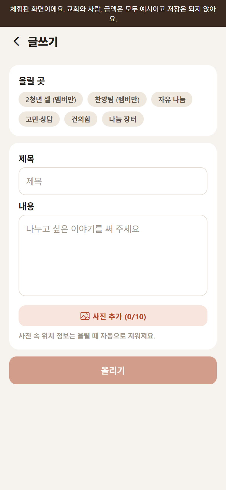
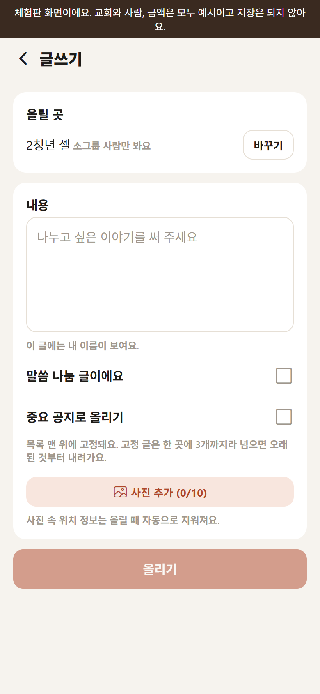
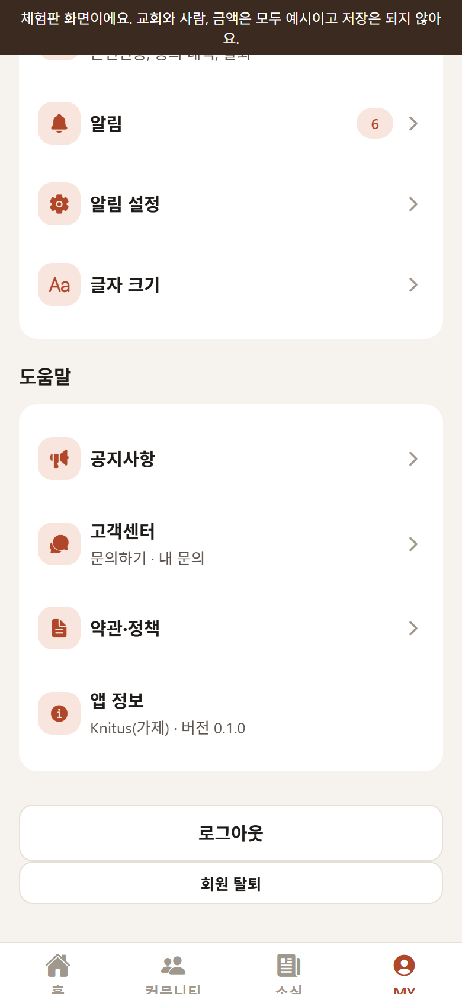
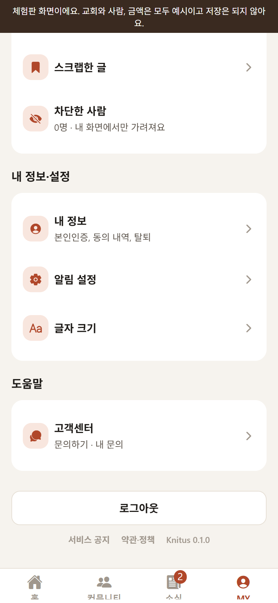

KNITUS 니터스
첫 화면에서 고를 것을 줄인 시안
힉의 법칙은 고를 것이 많을수록 결정이 늦어진다는 법칙입니다. 이 기준으로 신도 앱을 점검하고, 고친 모습을 따로 만들었습니다. 시안은 실제 서비스에 반영하지 않았습니다. 2026년 11월 27일.
숫자로 보면
휴대폰 화면(390×844) 한 장에서 누를 수 있는 곳을 셌습니다. 아래 탭 4개를 포함합니다.
| 화면 | 지금 | 시안 | 무엇이 달라졌나 |
|---|---|---|---|
| 홈 첫 화면 | 20 | 15 | 탭과 겹치는 바로가기 5개를 뺌 |
| 홈 끝까지 | 33 | 26 | '꼭 보세요'와 겹치는 피드 글도 뺌 |
| 글쓰기 | 11 | 7 | 올릴 곳 6개 대신 미리 고른 한 줄 |
| MY 메뉴 | 15줄 | 11줄 | 겹치는 줄을 빼고, 드물게 쓰는 것은 작은 글자로 |
| 커뮤니티 첫 화면 | 16 | 17 | 수는 비슷하지만 글을 보기 전에 고르는 일이 없어짐 |
1홈에서 탭과 같은 곳으로 가는 바로가기 5개를 뺐습니다
행사 신청과 새 공지는 '소식' 탭, 기도 제목은 '커뮤니티' 탭, 기도 노트는 'MY', 글 검색은 위 돋보기와 같은 곳으로 갔습니다. 같은 곳으로 가는 길이 두 개면 고를 것만 늘어납니다. 읽지 않은 공지 수는 아래 '소식' 탭에 숫자로 붙였습니다.
'꼭 보세요'에 나온 글이 바로 아래 피드 맨 위에 한 번 더 나오던 것도 뺐습니다.




2커뮤니티는 게시판을 먼저 고르지 않아도 글이 보입니다
지금은 글을 보려면 게시판 5개 중 하나를 먼저 골라야 합니다. 시안은 들어오자마자 게시판 새 글이 보이고, 게시판별로 보고 싶을 때만 '게시판별로 보기'를 누릅니다.
누를 수 있는 곳의 수는 16에서 17로 비슷합니다. 늘어난 것은 글마다 있는 '마음' 버튼이고, 줄어든 것은 글을 보기 전에 해야 하던 결정입니다. 처음에는 게시판 이름을 칩으로 늘어놓았는데, 소그룹 줄과 게시판, 기도, 모임 칸 아래에 고를 줄이 하나 더 쌓여 21곳으로 늘어나서 버렸습니다.




3글쓰기는 올릴 곳을 미리 골라 둡니다
지금은 올릴 곳 6개가 모두 펼쳐져 있고 아무것도 골라져 있지 않아, 글을 쓰기 전에 고르는 일부터 해야 합니다. 시안은 내 첫 소그룹을 미리 골라 '2청년 셀, 소그룹 사람만 봐요' 한 줄로 보여 주고, 다른 곳에 올리려면 '바꾸기'를 누릅니다.
기본값을 교회 전체 게시판이 아니라 소그룹으로 한 이유는, 잘못 올렸을 때 보는 사람이 적은 쪽이 덜 곤란하기 때문입니다. 소그룹이 없는 교인은 '자유 나눔'이 기본입니다. 소그룹이나 게시판 안에서 '글쓰기'를 누르면 지금처럼 그곳이 골라져 있습니다.




4MY 메뉴는 15줄에서 11줄로 줄였습니다
'알림'은 홈 위 종 아이콘과 같은 곳이라 뺐습니다. '회원 탈퇴'는 '내 정보' 안에도 있으니 MY에서는 뺐습니다. 잘못 누를 일도 줄어듭니다. 서비스 공지와 약관은 자주 쓰지 않아 맨 아래 작은 글자 링크로 내렸습니다.




그대로 둔 것
- 아래 탭 4개. 탭은 다섯 개 이하가 보통이라 줄일 이유가 없습니다.
- 커뮤니티의 게시판, 기도, 모임 세 칸. 세 개는 고르는 부담이 작습니다.
- 헌금. 이미 홈에서 빼고 MY 맨 위에 두었습니다. 더 숨기면 50~60대가 찾지 못합니다. 줄이는 것이 늘 답은 아니어서, 자주 쓰는 것은 그대로 두고 겹치는 길과 먼저 골라야 하는 곳만 줄였습니다.
- 관리자 웹 메뉴. 재정을 켜면 15개지만 기본으로 꺼 두어 대부분 10개이고, 교회 관리자는 매주 쓰며 익히는 화면이라 처음 보는 교인만큼 영향이 크지 않습니다. 관리자·권한, 요금제, 설정을 '설정' 하나로 묶는 안은 다음에 검토할 만합니다.
시안은 실제 서비스와 따로 보관했고, 실제 서비스와 기존 체험판(지금 앱 열기)은 바뀌지 않았습니다.
반영하기로 하면 함께 할 일이 있습니다. 커뮤니티의 '게시판 새 글'은 시안에서 게시판마다 글을 받아 합쳤는데, 실제로는 서버에 목록 하나를 두어야 빠릅니다. 알림 설정에서도 재정을 쓰지 않는 교회는 재정 알림 3개(기부금영수증, 집행·정산, 재정 공개)를 숨기면 고를 것이 더 줄어듭니다.